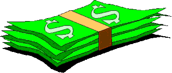

Рост, см | Масса нормостеников М, кг |
|---|---|
До 165 | М = рост - 100 |
166-175 | М = рост - 105 |
Более 175 | М = рост - 110 |
Масса для астеников «-10%», для гиперстеников «+10%».
Телосложение | Окружность запястья, см |
|---|---|
Астеник | меньше 16 |
Нормостеник | 16-19 |
Гиперстеник | больше 19 |
Пол | Обхват талии / бедра |
|---|---|
Муж. | 1 |
Жен. | 0,8 |
Необхдимое Время похудения(мес.) = Избыточный вес(кг) / 5(кг) – не менее во избежание осложнений со здоровьем (в том числе и обвиса кожи). Значит за сутки надо худеть не более чем на 170 г. Это необходимо строго контролировать на весах ежедневно.
Радуйтесь толстячки КПД вашего организма выше, чем у худышек, о ком говорят "не в коня корм". При поддержании вами, толстячки, правильного веса (а, следовательно, при поддержании здоровья) срок эксплуатации вашего организма раза в полтора выше чем у худышек.
Завтрак 10%, обед 25%, ужин 65% (ночью организм не должен голодать). Можно даже есть перед сном - это конечно нагрузка на желудок, но на набор веса это не влияет. Хотя, при правильном подборе продуктов этой тяжести на животе тоже не наблюдается. Лучше конечно выдерживать 2 часа между ужином и сном.
Приём поливитаминов по прилагаемым инструкциям. При склонности к мочекаменной болезни схема приёма следующая: постоянный приём витаминов 5-7 дней, затем на 2-3 дня увеличить потребление питьевой воды до 2 литров, часть ее, используя для приготовления отваров или настоев мочегонных трав, затем 5-7 дней отдыха - ни витаминов, ни лишней жидкости, такой цикл повторить 3-4 раза в год.
Пить за 15 мин. до еды.
Нет: мучное (любой хлеб), сладкое (сахар, свекла, морковь, виноград, бананы, любые соки - всевозможные фруктоза и сахарозы уже в сконцентрированном и готовом виде для превращения в жир!!!), шлифованный (практически весь) рис, пиво, картофель, кукуруза, супы на мясном и рыбном бульоне (только при болезни можно, т. к. идёт мгновенное впитывание жира, находящегося в бульоне уже практически в переработанной форме!!!), любые покупные колбасы и изделия из мясного фарша.
Да: растительное (овощи, фрукты, апельсин – можно злоупотреблять при чувстве голода, яблоки - 4 в день, зелёный чай за 15 мин. до еды – 4 в день, сухое вино, овощные супы, хлебцы на отрубях или отруби в чистом виде), молочное (творог, брынза, кефир), морепродукты (треска, кальмары и др. нежирные), грибное, мясное (не жирные сорта: куриная грудинка, говядина, белок яиц).
Жевать много: 30-60 раз.
Важно потреблять определённое количество белков, жиров и углеводов в сутки (оценка по калориям не годится - т.к. не все вещества обладающие калорийностью усваиваются) - это вкусно, объёмно и не дорого.
ВНИМАНИЕ: перед началом похудения (особенно если Ваш избыточный вес за 25 кг и возраст за 40 лет) посоветуйтесь с врачом или хотя бы сделайте УЗИ почек и поджелудочной железы, в процессе похудения камни в этих органах могут начать движение на выход, а это - ой, как больно.
. |
|  | Заинтересованные в получении поэтапных рационов для приобретения и поддержания оптимального веса отправьте, по обычной цене для твоего тарифа, SMS со своим "нормальным весом" (методика расчёта в начале страницы) и адресом "e-mail" на +7 927 1543923. |
. |
Простого соблюдения правил питания для приобретения и поддержания оптимального веса не достаточно, необходима физическая нагрузка, ведь только при работе мышц идёт интенсивный и необходимый расход жира.
Тем - кто хочет просто похудеть и не толстеть вполне достаточно просто ходить на свежем воздухе с крейсерской скоростью (не плестись, но и не бежать) в среднем около 1 часа в день.
. |
Заинтересованные в получении рекомендаций по времени, темпу занятий, а также по вспомогательным средствам и БАДам отправьте, по обычной цене для твоего тарифа, SMS с текстом "ходьба" и адресом "e-mail" на +7 927 1543923. |
. |
Тем - кто хочет избавиться от ломоты в суставах, держать их в отличной форме, до автоматизма довести связки боевых движений, отражающих удары противника и наносящих контрудар (используя инерцию противника), провести глубокую вентиляцию лёгких, массаж внутренних органов, освоить технику дыхания, подавляющую боль - необходимо выполнять комплекс "утренней зарядки - разогревалки" (15 мин.).
. |
Заинтересованные в получении комплекса "утренней зарядки - разогревалки" отправьте, по обычной цене для твоего тарифа, SMS с текстом "зарядка" и адресом "e-mail" на +7 927 1543923. |
. |
Тем - кто хочет привести в надлежащий вид мышцы (от шеи до кончиков пальцев, в домашних условиях, без специальных тренажёров) и закалить ударные поверхности своего тела, необходим тренировочный комплекс (1 час) из динамических упражнений, статических и полустатических поз.
. |
Заинтересованные в получении тренировочного комплекса отправьте, по обычной цене для твоего тарифа, SMS с текстом "тренировка" и адресом "e-mail" на +7 927 1543923. |
. |